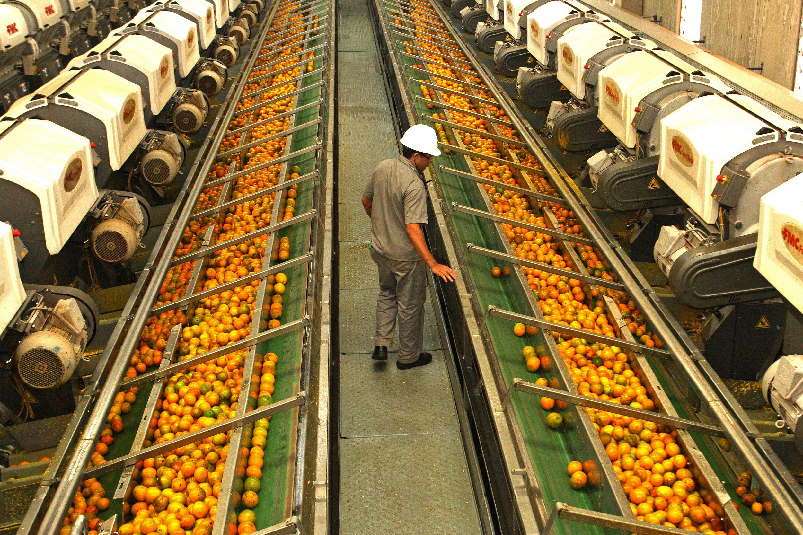
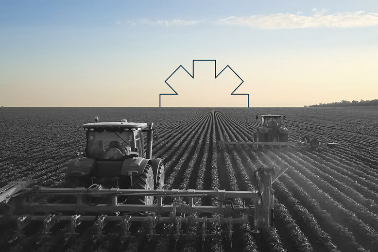

Sobre a Agroindústria

A agroindústria é um conjunto de atividades ligadas à transformação de produtos primários em subprodutos que,
em sua grande maioria, são destinados à alimentação do consumidor final.
Na prática, a agroindústria trabalha com a produção de carnes, cereais,
laticínios, roupas, combustíveis, entre outros produtos. O intuito é transformar a matéria-prima a fim de prolongar a sua disponibilidade e,
consequentemente, aumentar o prazo de validade e reduzir a sazonalidade.
Desafios

A atividade agroindustrial apresenta riscos como qualquer outro segmento produtivo.
Tanto que, para o Sebrae, um dos principais desafios para a agroindústria no Brasil é a falta de gestão.
Como vimos, há setores que estão em declínio, a despeito do crescimento de outros, o que sempre preocupa, já que uma economia forte se faz com todos os setores chave prosperando.
Portanto, é fundamental que a agroindústria aprimore seus mecanismos de gestão, de modo que o progresso material e tecnológico seja melhor aproveitado.s
Contribuição
A agroindústria tem participação de aproximadamente 5,9% no Produto Interno Bruto (PIB) brasileiro, no beneficiamento, na transformação dos produtos e no processamento de matérias-primas provenientes da agropecuária, promovendo dessa forma maior integração do meio rural com a economia de mercado.
Relogio do agroindústria
7
dias
7
horas
7
min
7
seg